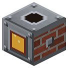
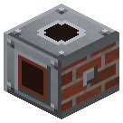
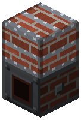
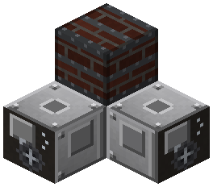
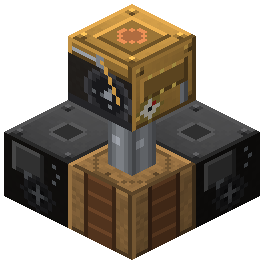
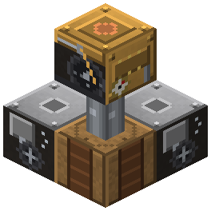

Bessemer Converter
Era 2Steam and mechanics

idle

running
16 iron + 2 coke -> 14 steel + 2 slag per blow. Air from an adjacent blower. Shaft sections stacked on top (up to 3) - one more load each; needs one more blower each.
Parameters
| Era | 2 — Steam and mechanics |
|---|---|
| Multiblock | yes: sections |
| Drive | own firebox |
| What it does | 16 iron + 2 coke -> 14 steel + 2 IC2 slag, 600 t of blast; up to 3 shaft sections |
| Input energy | air from blowers |
| Made of | RC blast furnace brick, boiler, steel gear and plates, invar |
Numbers
| converter: pig iron per heat | 16 pcs |
|---|---|
| converter: coke | 2 pcs |
| converter: steel per heat | 14 pcs |
| converter: one heat | 600 ticks |
Fed by
- Railcraft:fuel.coke ← Coke Oven Chamber
Feeds
- no Zavod machine uses its product
Assembly
No blast — no blow. Too little power — slower blow.

The converter — one charge.

Shaft sections stacked on top (up to 3, 1 here): each one is one more charge.

Blowers right next to the converter itself (not the sections): one per charge — 2 here.

Blowers run off the shaft: a pulley beside the machine (one vertical pulley drives both here), shaft up to a steam engine.

assembled
running
Faded blocks were placed in earlier steps.